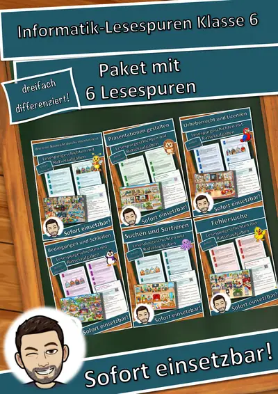
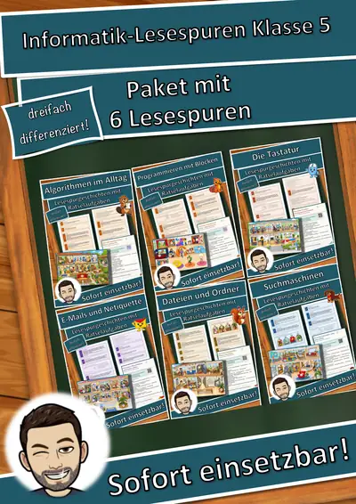
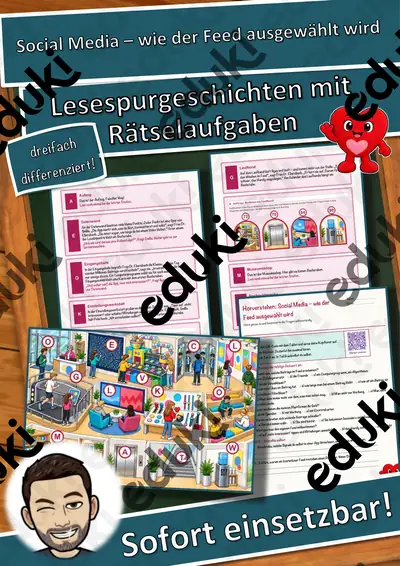
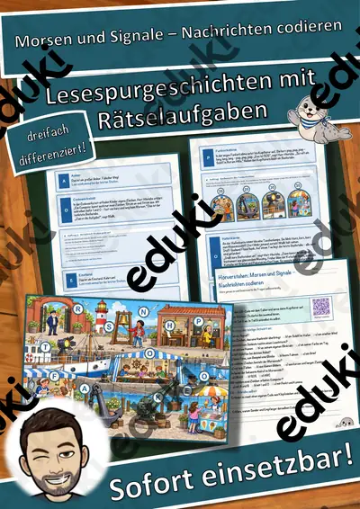
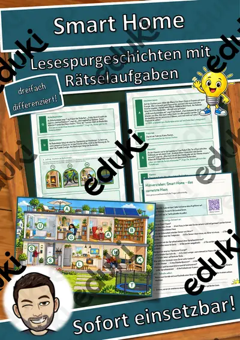
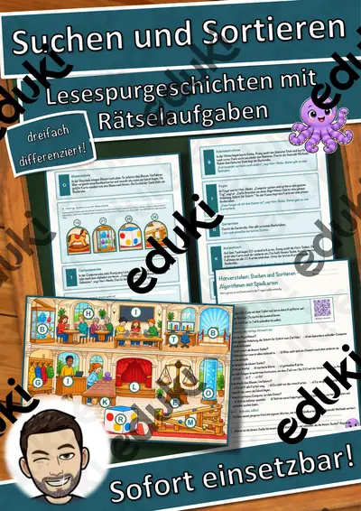
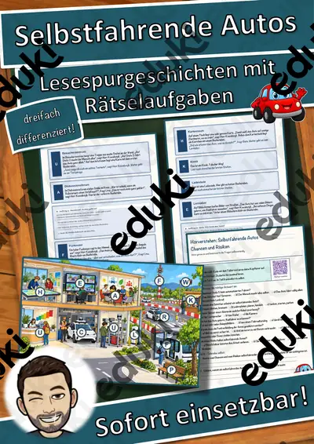
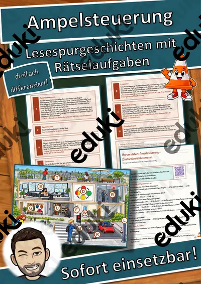

Materialpaket Lesespurgeschichten Informatik Klasse 8: 7 Lesespuren mit Rätselaufgaben, dreifach differenziert

Materialpaket Lesespurgeschichten Informatik Klasse 7: 8 Lesespuren mit Rätselaufgaben, dreifach differenziert

Materialpaket Lesespurgeschichten Informatik Klasse 6: 6 Lesespuren mit Rätselaufgaben, dreifach differenziert

Materialpaket Lesespurgeschichten Informatik Klasse 5: 6 Lesespuren mit Rätselaufgaben, dreifach differenziert

Materialpaket Lesespurgeschichten Informatik Klasse 3: 8 Lesespuren mit Rätselaufgaben, dreifach differenziert

Materialpaket Lesespurgeschichten Informatik Klasse 1: 6 Lesespuren mit Rätselaufgaben, dreifach differenziert

Lesespur: Das neue Smartphone: sicher einrichten – Lesespurgeschichte mit Rätseln (Klasse 7)

Lesespur: Der Hackathon: im Team eine digitale Idee entwickeln – Lesespurgeschichte mit Rätseln (Klasse 10)

Lesespur: Social Media: wie der Feed ausgewählt wird – Lesespurgeschichte mit Rätseln (Klasse 8)

Lesespur: Der Saugroboter: Sensoren und Hindernisse – Lesespurgeschichte mit Rätseln (Klasse 3)

Lesespur: Prüfziffern: wie Computer Tippfehler erkennen – Lesespurgeschichte mit Rätseln (Klasse 7)

Lesespur: Kann ein Computer lernen?: KI für Kinder – Lesespurgeschichte mit Rätseln (Klasse 3)

Lesespur: Roboter in der Fabrik: Automatisierung und Arbeit – Lesespurgeschichte mit Rätseln (Klasse 9)

Lesespur: Chatbots und Sprachassistenten: wie Maschinen sprechen – Lesespurgeschichte mit Rätseln (Klasse 7)

Lesespur: Präsentationen gestalten: Folien, die überzeugen – Lesespurgeschichte mit Rätseln (Klasse 6)

Lesespur: Die Tastatur: Zehnfingersystem und Tastenkürzel – Lesespurgeschichte mit Rätseln (Klasse 5)

Lesespur: Morsen und Signale: Nachrichten codieren – Lesespurgeschichte mit Rätseln (Klasse 3)

Lesespur: Geheime Zeichen: Bildercodes und Symbole – Lesespurgeschichte mit Rätseln (Klasse 1)

Lesespur: Datenkompression: wie Dateien klein werden – Lesespurgeschichte mit Rätseln (Klasse 10)

Lesespur: Die Cloud: Daten im Rechenzentrum – Lesespurgeschichte mit Rätseln (Klasse 9)

Lesespur: Smart Home: das vernetzte Haus – Lesespurgeschichte mit Rätseln (Klasse 8)

Lesespur: Ein eigenes Spiel programmieren: Figuren, Regeln, Punkte – Lesespurgeschichte mit Rätseln (Klasse 7)

Lesespur: Suchen und Sortieren: Algorithmen mit Spielkarten – Lesespurgeschichte mit Rätseln (Klasse 6)

Lesespur: E-Mails und Netiquette: höflich und sicher schreiben – Lesespurgeschichte mit Rätseln (Klasse 5)

Lesespur: Datendetektive: Daten sammeln, zählen, darstellen – Lesespurgeschichte mit Rätseln (Klasse 3)

Lesespur: Sortieren wie ein Computer: der Reihe nach – Lesespurgeschichte mit Rätseln (Klasse 1)

Lesespur: Selbstfahrende Autos: Chancen und Risiken – Lesespurgeschichte mit Rätseln (Klasse 10)

Lesespur: Phishing und Betrug im Netz erkennen – Lesespurgeschichte mit Rätseln (Klasse 9)

Lesespur: Messen, Steuern, Regeln: das Gewächshaus mit Mikrocontroller – Lesespurgeschichte mit Rätseln (Klasse 8)

Lesespur: Ampelsteuerung: Zustände und Automaten – Lesespurgeschichte mit Rätseln (Klasse 7)
Keine Materialien gefunden – versuch einen anderen Suchbegriff oder Filter.
Informatik, die ohne Rechner beginnt
Informatische Bildung heißt zuerst: Probleme in Schritte zerlegen. Das lässt sich auf Papier üben, lange bevor ein Computer zum Einsatz kommt. Die meisten Materialien dieser Seite sind deshalb Lesespuren, die ohne Geräte funktionieren und trotzdem auf typische Kompetenzen vorbereiten: Muster erkennen, Anweisungen formulieren, Daten schützen.
Auch wenn die Ausstattung der Schule schwankt, bleibt der Unterricht planbar. Die Aufgaben sind so formuliert, dass sie auf Papier funktionieren, und die Hilfen reichen von Bildern bis zu Hinweisen, sodass auch Klassen mit unterschiedlichen Vorkenntnissen zurechtkommen.
Wer eine Unterrichtsreihe zum sicheren Umgang mit dem Netz plant, kombiniert zum Beispiel Titel zu Suchmaschinen, Phishing und Verschlüsselung über mehrere Jahrgänge und baut so einen Spiralaufbau auf.
Klasse 1 bis 3: Denken wie ein Computer
Die Grundschul-Titel heißen „Geheime Zeichen“, „Sortieren wie ein Computer“, „Anweisungen genau geben“ und „Muster fortsetzen“. In Klasse 3 folgen „Der Saugroboter“, „Kann ein Computer lernen?“, „Morsen und Signale“ und „Datendetektive“.
Klasse 5 und 6: Werkzeuge beherrschen
In der Orientierungsstufe geht es um Handwerk am Rechner: „Die Tastatur“, „E-Mails und Netiquette“, „Suchmaschinen“, „Dateien und Ordner“ und „Programmieren mit Blöcken“. Klasse 6 ergänzt „Präsentationen gestalten“, „Urheberrecht und Lizenzen“, „Fehlersuche“ sowie „Bedingungen und Schleifen“.
Klasse 7 bis 10: Medien, Daten, Technik
Im Zentrum der Mittelstufe stehen Medienkompetenz und Technikverständnis: „Das neue Smartphone“, „Chatbots und Sprachassistenten“, „Ein eigenes Spiel programmieren“ in Klasse 7, „Social Media“, „Smart Home“ und „Digitale Spuren“ in Klasse 8. Mit „Phishing und Betrug im Netz erkennen“, „Verschlüsselung“ und „Tabellenkalkulation“ wird es in Klasse 9 konkret, Klasse 10 deckt „Deepfakes“, „Selbstfahrende Autos“ und „Objekte und Klassen“ ab.
Häufige Fragen
Brauche ich Computer für die Materialien?
Nein. Die Lesespuren funktionieren auf Papier. Wo ein Rechner sinnvoll ist, steht es bei den Aufgaben.
Eignen sie sich für ITG-Pflichtstunden?
Ja, die Themen von der Tastatur bis zur Tabellenkalkulation decken typische Inhalte der informationstechnischen Grundbildung ab.
Wie aktuell sind die Themen KI und Social Media?
Die Texte erklären Grundprinzipien, die sich nicht täglich ändern. Konkrete Produkte werden bewusst nur sparsam genannt.
Kann ich Programmieren damit lehren?
Sie bereiten Denkweisen vor und führen in Blockprogrammierung und einfache Objekte ein. Eine eigene Programmierumgebung ersetzen sie nicht.